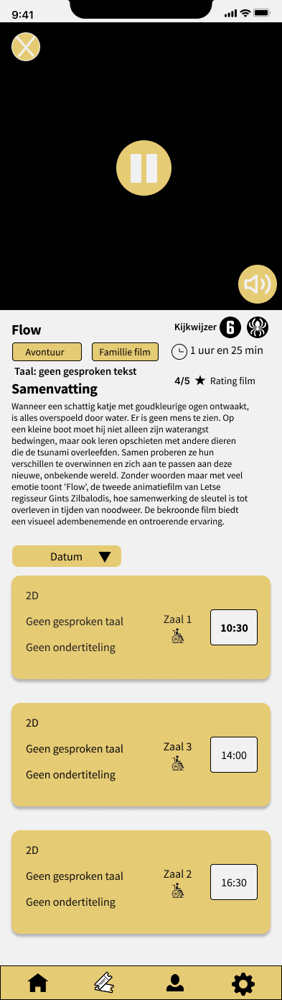
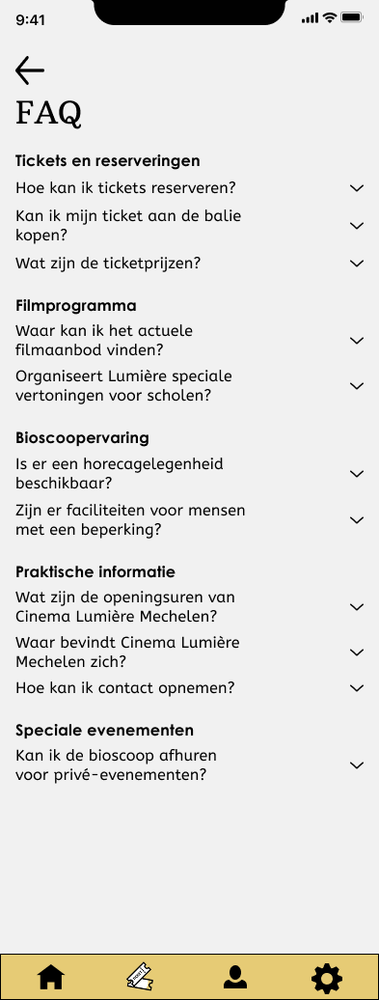
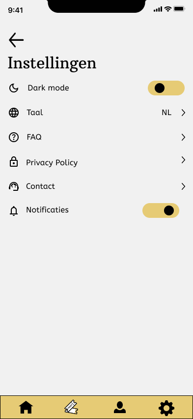

Redesign Cinema Lumière App
Probleemstelling
De website bevat veel waardevolle informatie, maar op mobiel wordt deze minder toegankelijk door: Veel scrollen om films terug te vinden Een complexe reservatieflow Niet alle knoppen zijn even duidelijk
De uitdaging
Cinema Lumière beschikt over een website voor filmvertoningen en evenementen, maar de mobiele versie biedt geen optimale gebruikerservaring. Omdat de cinema momenteel geen mobiele app heeft, ontwierp ik een concept voor een app die bezoekers helpt om sneller films te ontdekken en eenvoudig tickets te reserveren.
Doelstelling
- Gebruiksvriendelijke film categorieën ontwerpen
- Ticketreservatie vereenvoudigen
- Merkidentiteit van Lumière vertalen naar mobiel


Research & Analyse
Concurrentieanalyse
Ik vergeleek de mobiele website met:
- Kinepolis
- Pathé
- Vue Cinemas
Om te zien hoe de flow in elkaar zit.
User Research
Belangrijke inzichten:
- Wat speelt er vandaag?
- Wanneer speelt het?
- Kan ik meteen een ticket kopen?
Schetsen / Wireframes
Voordat ik begon aan het visuele ontwerp werkte ik de belangrijkste gebruikersstromen uit in wireframes.

Filmoverzicht en detailpagina
Het filmoverzicht toont alle beschikbare films in een eenvoudig scrollbaar formaat. De nadruk ligt op snelle ontdekking van content, met duidelijke visuele hiërarchie en minimale afleiding. Op de detailpagina krijgen gebruikers toegang tot essentiële informatie zoals de trailer, samenvatting, genre en beschikbare speelmomenten. Het doel was om alle relevante informatie op één scherm beschikbaar te maken.
Ticket reservatie
De reservatieflow werd opgesplitst in overzichtelijke stappen: Vertoning kiezen Tickettype selecteren Zitplaats kiezen Bestelling bevestigen Door de flow op te delen in duidelijke stappen wordt de cognitieve belasting verminderd en blijft het proces overzichtelijk voor mobiele gebruikers.
Deze wireframes vormden de basis voor het verdere ontwerp. Ze maakten het mogelijk om de gebruikerservaring vroeg in het proces te testen en te optimaliseren voordat het high-fidelity design werd uitgewerkt.
Van wireframe naar prototype
Vanuit de wireframes werkte ik het ontwerp verder uit tot een interactief high-fidelity prototype. Hier kreeg het concept voor de Lumière-app voor het eerst zijn volledige visuele identiteit. Ik experimenteerde met kleur, typografie, beeld en verschillende UI-componenten om een stijl te creëren die past bij de sfeer van Cinema Lumière. Tegelijk bleef gebruiksvriendelijkheid centraal staan: elke interactie en overgang moest duidelijk aanvoelen op een mobiel scherm. Het prototype brengt de belangrijkste gebruikersflow samen: van een film ontdekken en een voorstelling kiezen tot het selecteren van een zitplaats, betalen en ontvangen van een bevestiging.







Reflectie
Tijdens dit project heb ik geleerd dat ontwerpkeuzes die voor mij vanzelfsprekend lijken, niet altijd even duidelijk zijn voor gebruikers. Door gebruikerstesten ontdekte ik dat sommige interacties op de mobiele website voor verwarring zorgden. Een concreet voorbeeld was de zoekfunctie. In mijn eerste ontwerp stond bovenaan een zoekbalk. Tijdens de testfase bleek echter dat gebruikers niet meteen begrepen dat ze eerst op de zoekbalk moesten tikken om te kunnen zoeken. Op een smartphone verwachtten ze eerder een herkenbaar zoekicoon. Daarom heb ik de zoekbalk vervangen door een zoekicoon(vergrootglas). Wanneer gebruikers hierop tikken, opent de zoekfunctie onmiddellijk, waardoor de interactie veel intuïtiever aanvoelt. Dit project heeft me geleerd hoe belangrijk het is om ontwerpkeuzes te toetsen aan echte gebruikers. Kleine aanpassingen, gebaseerd op feedback, kunnen een grote impact hebben op de gebruiksvriendelijkheid van een ontwerp